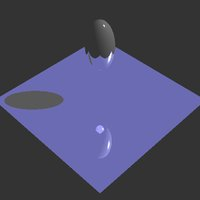
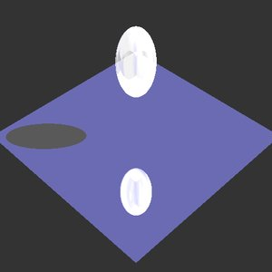
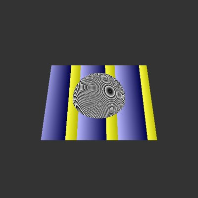
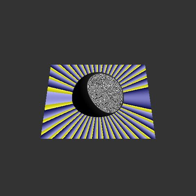
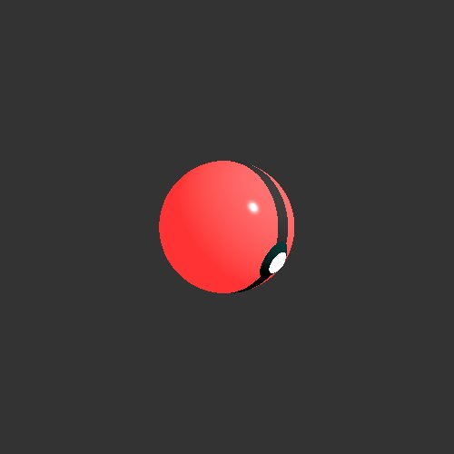

Isaac Tessler
ijt3cd
Ubuntu
3 Late days
Fully Implemented:
-getRay(1)
-rayGroup::IntersectA(2)
-raySphere::intersect(2)
-rayTriangle::intersect(2)
-rayScene::getColorA(1)
-rayLight::diffuse(2)
-rayLight::specular(2)
-rayLight::shadow(2)
-rayScene::getColorB(1)
-rayGroup::intersectB(2)
-rayScene::getColorC(1)
-rayScene::Refract(2) (normal refraction doesn't work, but i.r. is fully implemented regardless.)

Fully implemented but buggy:
-Refraction without ir.(1) Bounding inside and getting too bright
-Acceleration.(3) Nearly works, but cuts off lots.

art contest entries(1) (made while implementing specular):


ray contest entry(1)
